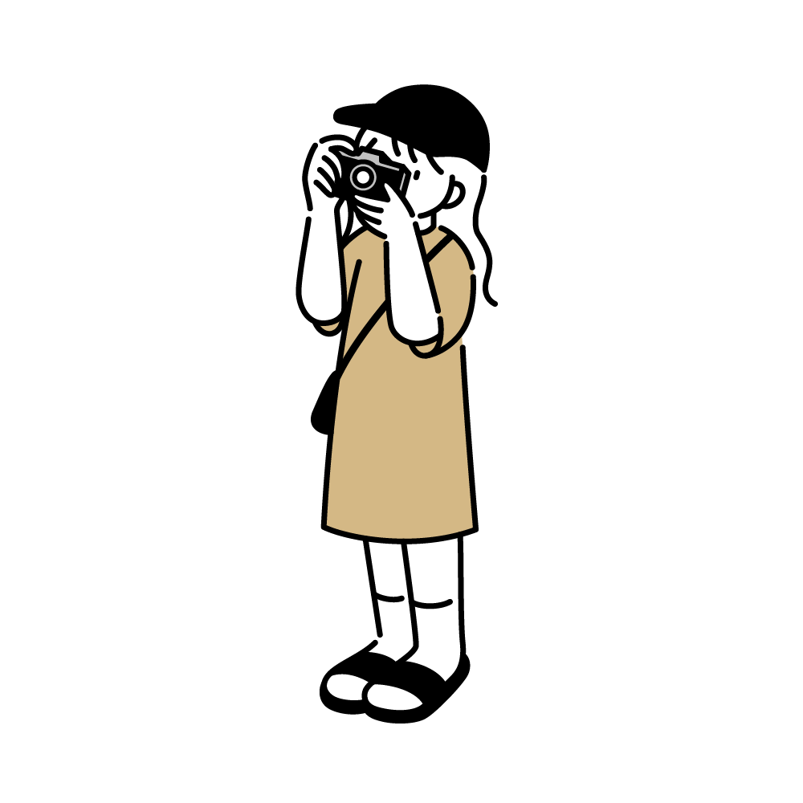
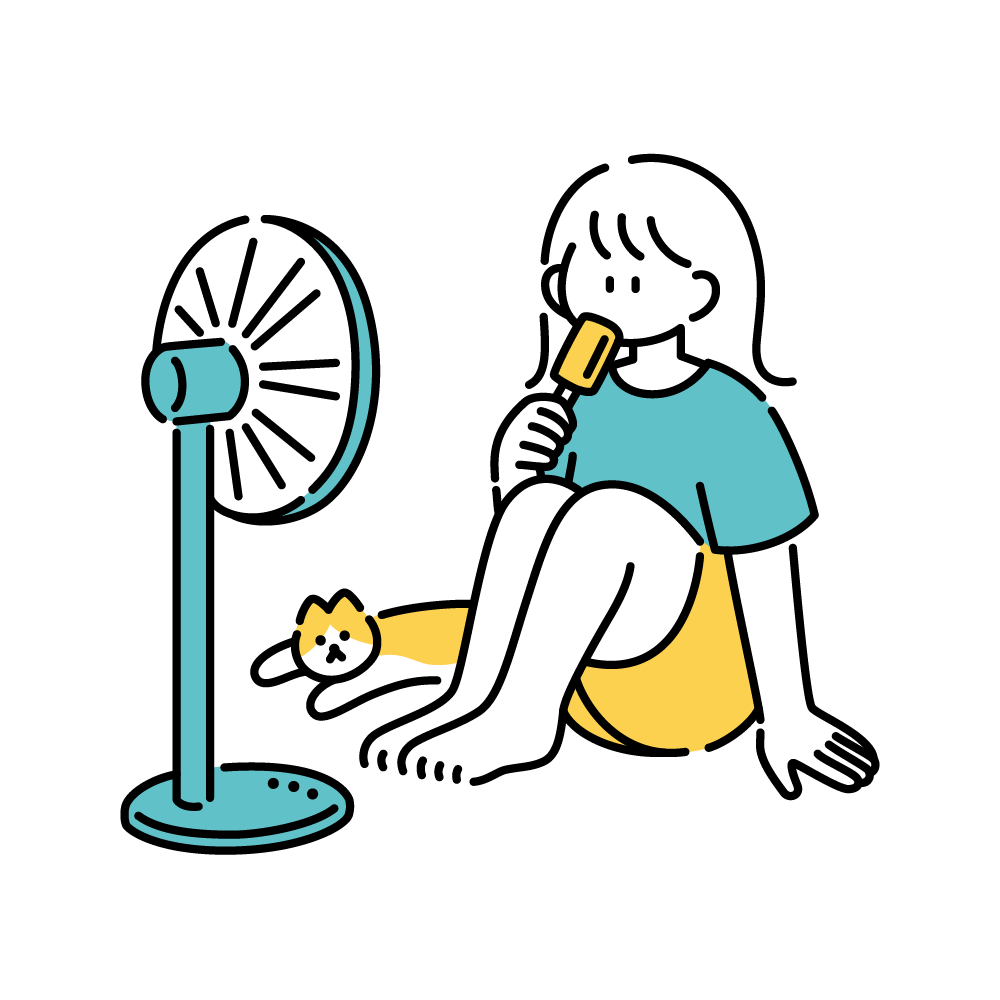
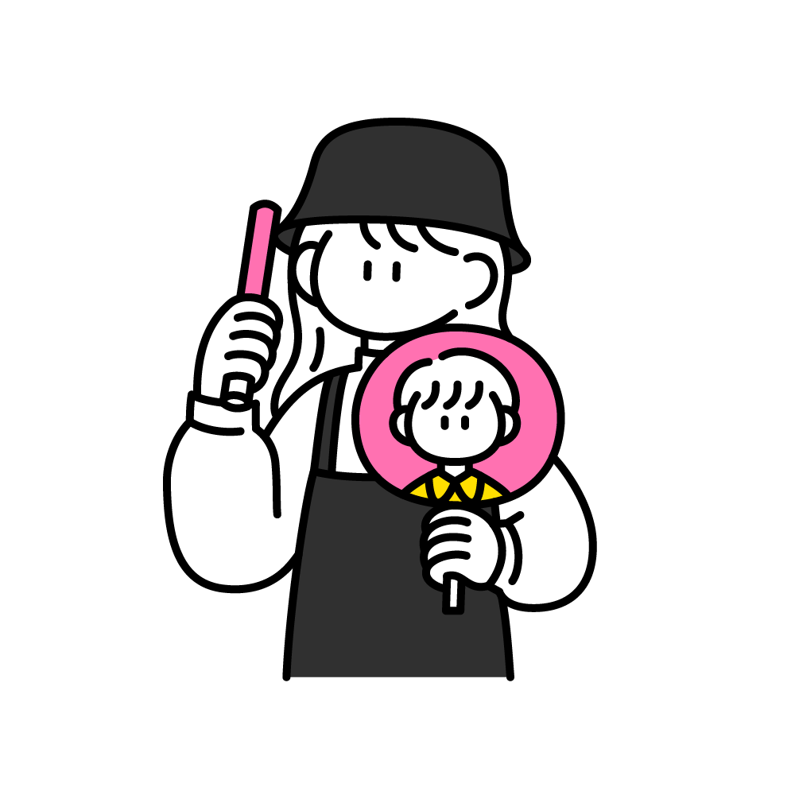
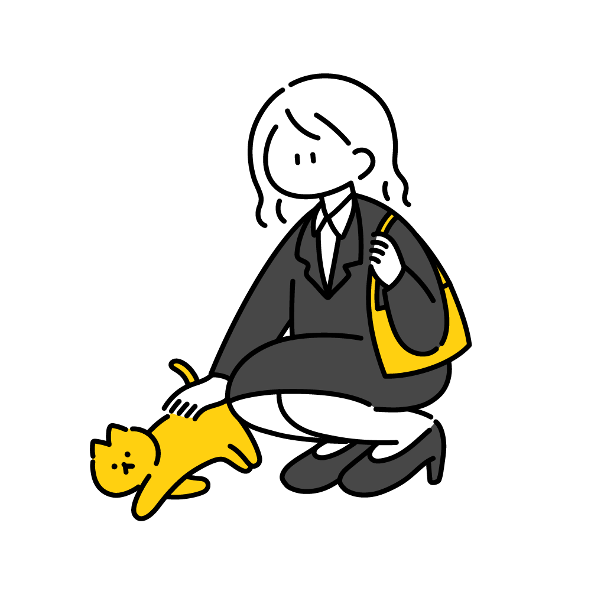

- Top >
- Profile
PROFILE
About Me

広島県出身
200x年生まれのかに座
三人兄弟の長女として誕生しました
高校2年生の時に父から一眼レフカメラを借りたのをきっかけに写真を撮り始めました
ジブリ映画とトムとジェリーが大好きで、ジブリの推しはアシタカ（顔がドタイプ）です
Biography

200x 妹と弟がいる長女として生まれる
20xx 小学校の鼓笛隊でトランペットのオーディションに合格する
20xx 中学校の吹奏楽部でトランペットを担当
20xx 高校の吹奏楽部でトランペット・トロンボーン・ユーフォニアムを担当
20xx 軽音楽部の卒業ライブの撮影を依頼される（初仕事）
20xx 〇〇女子大学〇〇学部〇〇学科 入学
20xx 新入生歓迎オリエンテーションセミナーの副実行長を務める
20xx 株式会社シミズ 写真のスマイルでカメラマンとしてインターン開始
Favorite Artist & Bands

＜ 久石譲 ＞
「アシタカせっ記」、「星をのんだ少年」、「塚森の大樹」、「竜の少年」、「Oriental Wind」
＜ 樽屋雅徳 ＞
「マードックからの最後の手紙」、「斐伊川に流るるクシナダ姫の涙」、「マゼランの未知なる大陸への挑戦」
＜ Daughrty ＞
＜ Chevon ＞
＜ LinkinPark ＞
My Dream

私は将来スクールカメラマンになるのが夢です
カメラマンを目指したきっかけは、高校2年生の時に父から借りた一眼レフカメラでした
何気なく撮り始めた写真でしたが、友達から「撮ってくれてありがとう！」「また撮ってほしい！」と言ってもらえるようになり、
写真を通して人を笑顔にできる喜びを経験していきました
そして、私自身も学生時代、学校行事でカメラマンさんが撮ってくださった写真にたくさん元気をもらいました
何年経っても見返したくなる写真は、私の大事なたからものになっています
だからこそ、今度は私がその思い出を残す存在になりたい
写真を通して、たくさんの学生のみなさんに「撮ってもらえてよかった」と思ってもらえるスクールカメラマンになることが私の夢です
What I Value
思い出というカタチのないものを写真というカタチにして、
たくさんの人を笑顔にする写真を撮ることを目標にしています
積極的に声をかけたり日常生活や自然体を切り撮るのを意識したりして撮影しています